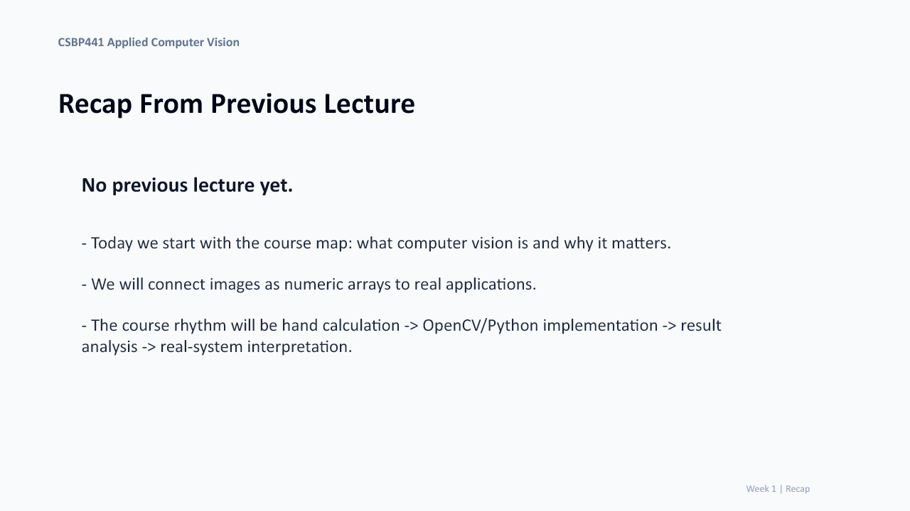
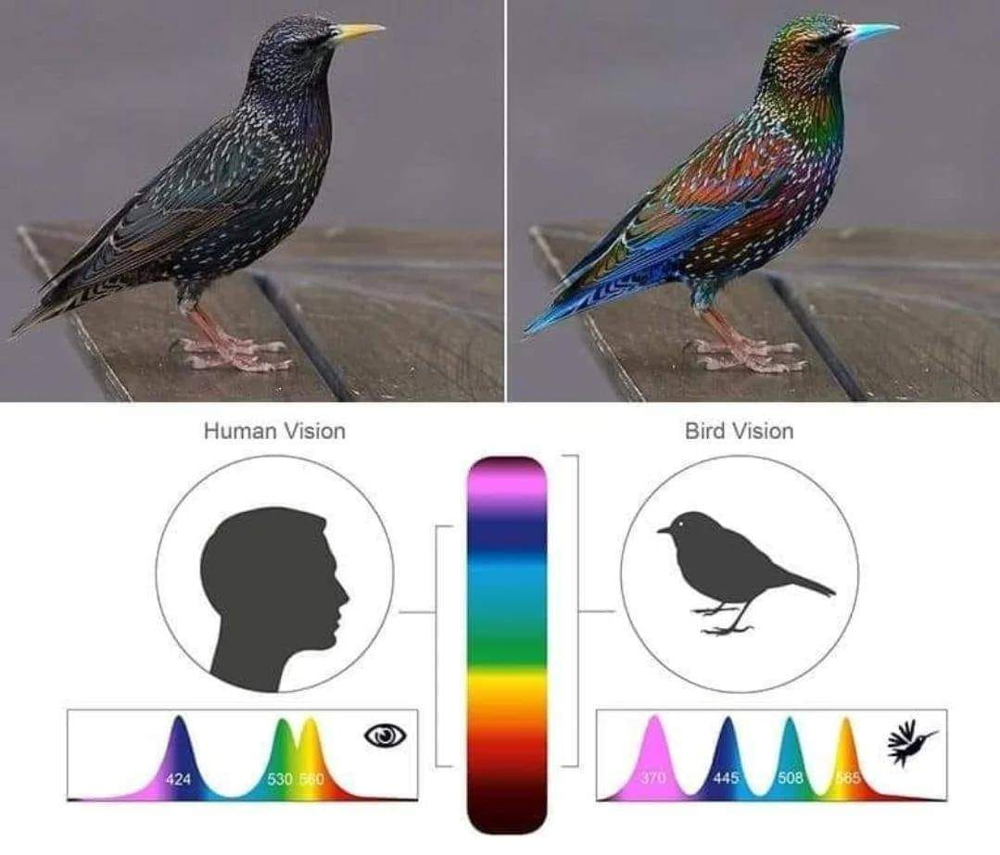
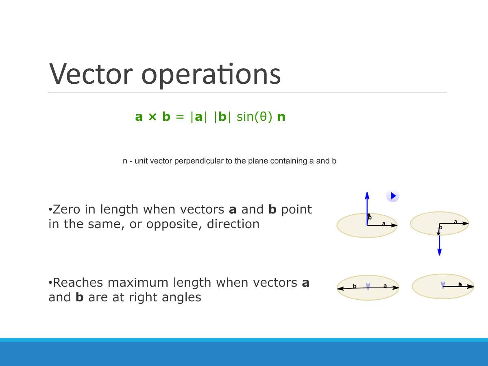
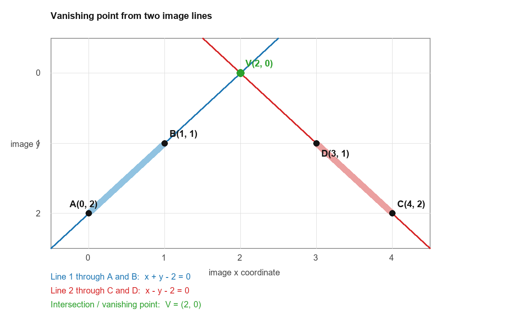
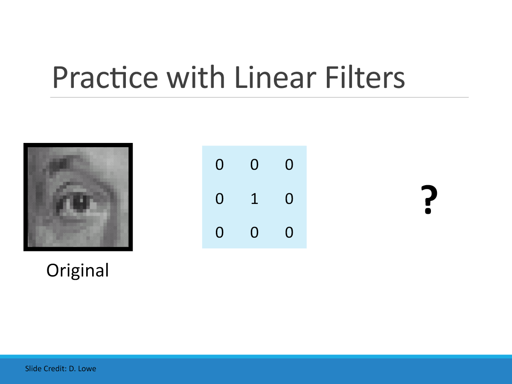

Fall 2026 course workspace
CSBP441 Applied Computer Vision
Move from visual measurements to meaningful decisions through hand calculation, Python implementation, result analysis, and real-system interpretation.
- Current collection
- LN1-LN5
- Practice modes
- Quiz + generated problems
- Notebook workflow
- Open in Colab
Lecture notes
Learn, calculate, implement
Each lecture page connects the essential theory to a small hands-on task, a notebook, self-check questions, and parameterized exam practice.

LN1Computer Vision Foundations
Goals, semantic gap, challenges, applications, and system thinking.
Open lecture
LN2Images, Perception, and Tasks
Digital images, color, pipelines, and the outputs of core vision tasks.
Open lecture
LN3Linear Algebra and Transformations
Vectors, matrices, homogeneous coordinates, and geometric transforms.
Open lecture
LN4Camera Models and Projection
Pinhole projection, lines, vanishing points, calibration, and distortion.
Open lecture
LN5Images and Filtering
Point operations, correlation, convolution, padding, noise, and edges.
Open lecturePractice engine
One concept, many valid variants
Choose a lecture
Work inside the concept you are currently studying.
Generate a seed
Receive new values while preserving the intended method and difficulty.
Reveal the solution
Compare your method only after completing the calculation.
Course resources
Assessment and notebook material
Class tools
Attendance check-in
Preview roster upload, rotating class codes, student verification, and attendance export in a browser-only demonstration.